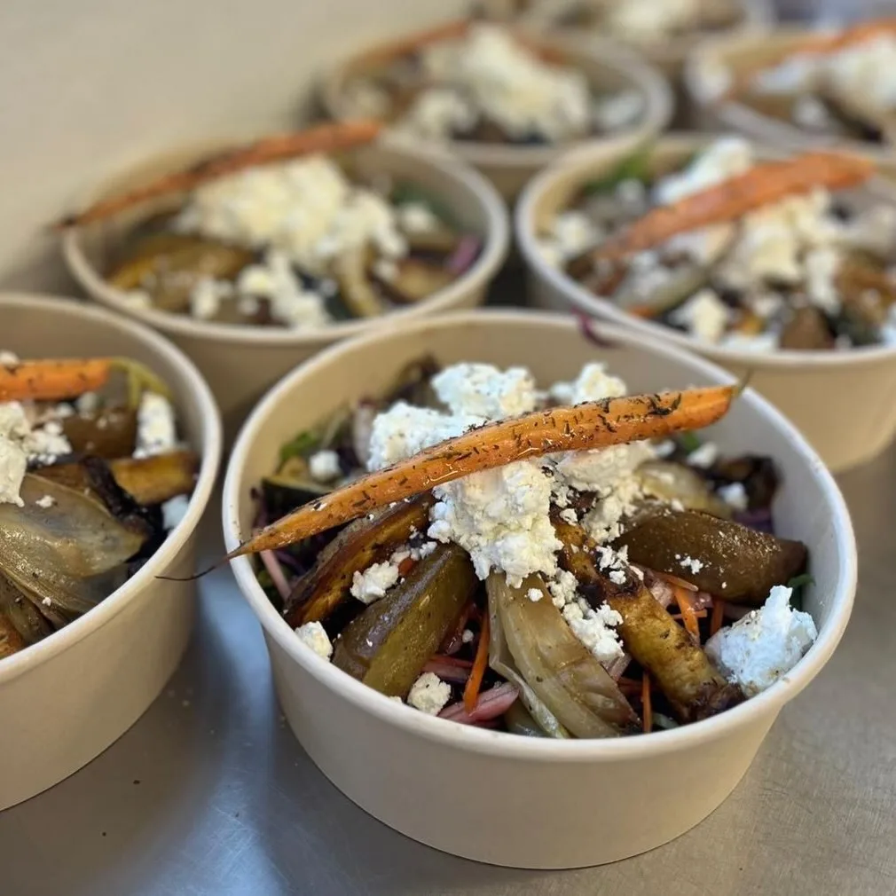
Ontbijt
Tot 10u45- Açaí bowl12
- Yoghurt bowl12
- Havermout met peer in kaneel11
- Zoete wafels13
- Pain perdu van butternutbrood14
- Pancakes met cashewcrème14
Twee huisgemaakte butternutwafels, een vegan burger, verse groentjes en onze eigen sauzen. Aan de Bredabaan in Brasschaat, al sinds 2016.
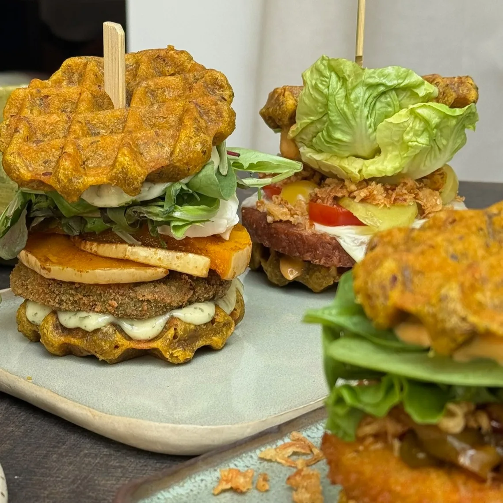
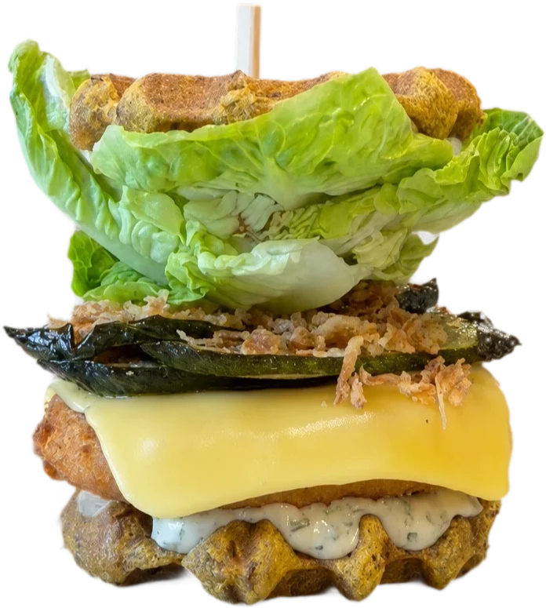
Toen Quick deze herfst met een wafelburger uitpakte, moesten we even lachen. Wie hier ooit lunchte, kent het concept al jaren. Not just a burger, not just a waffle. Simply our Wurger.
Alles plantaardig. 's Morgens bowls en wafels, vanaf 11 uur taffles, salades en Wurgers.

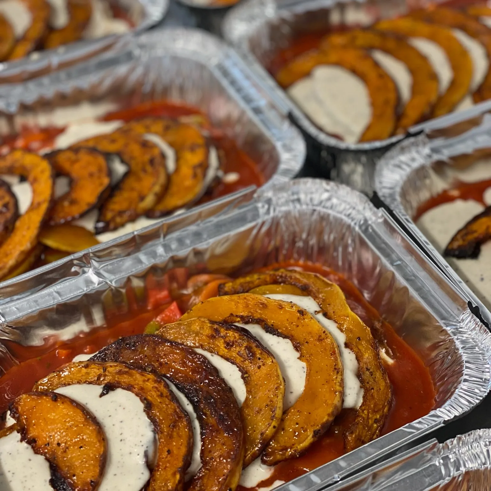
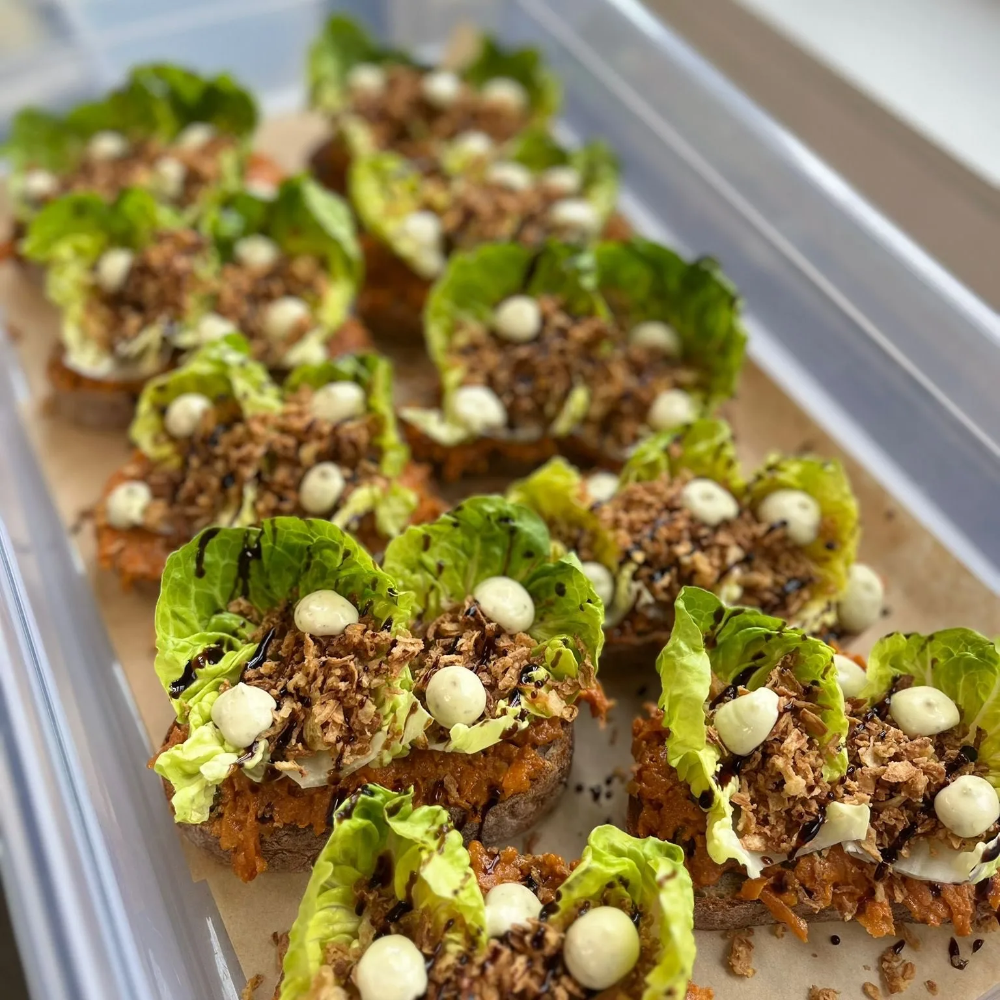
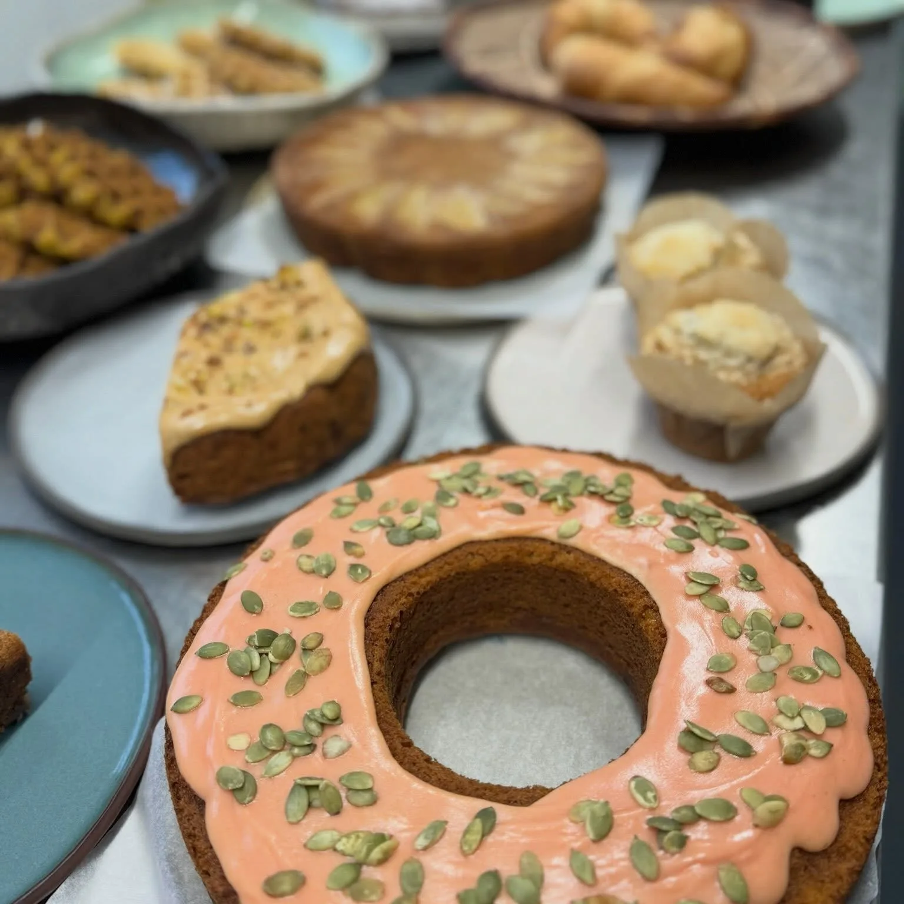
Snickers, brownie, bounty, appelcake, butternut-chai cake en natuurlijk Nona's carrotcake. Allemaal vegan.
€ 5,5 per stuk Volledige kaart als pdfEen koffie met havermelk, een slaatje in een kraftbakje of een stuk taart voor straks. We pakken het in terwijl je wacht.
"En achteraf kan je nog een zalig dessertje mee naar huis nemen. All vegan, I love it."Nathalie Lesage, op Google
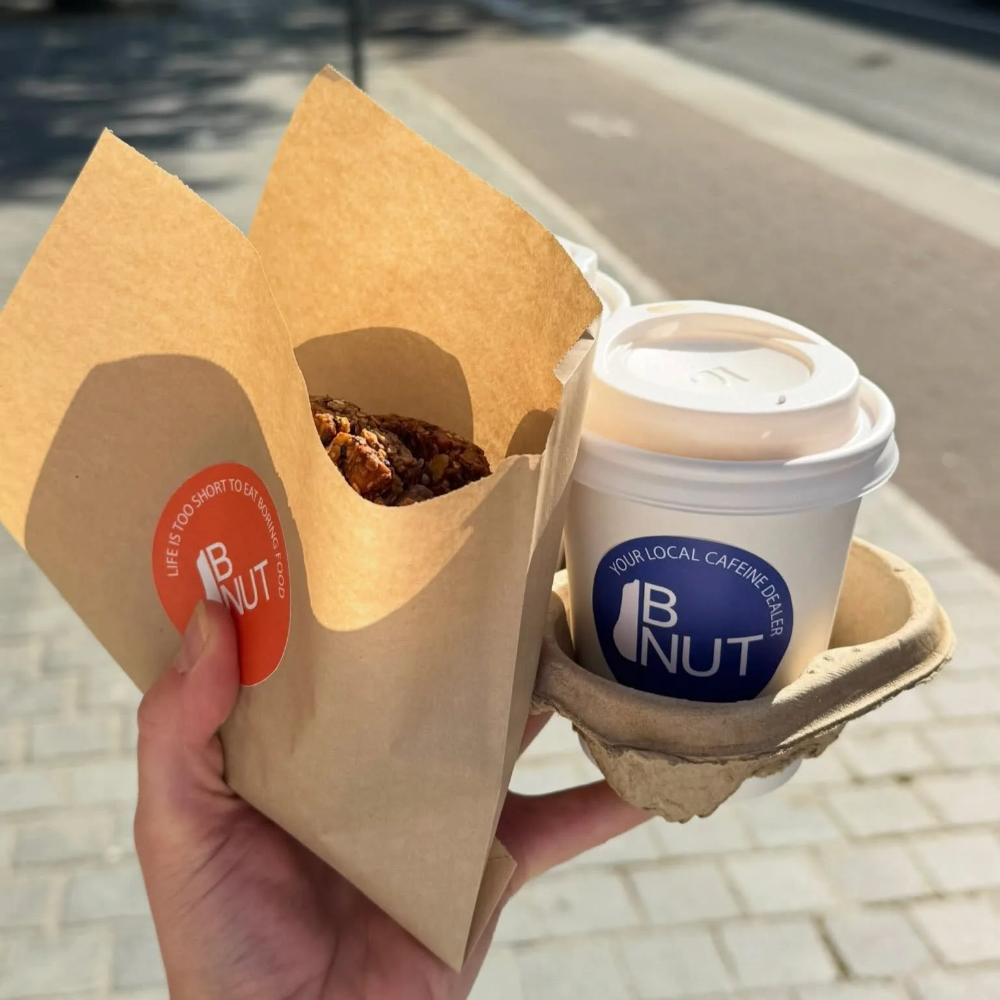
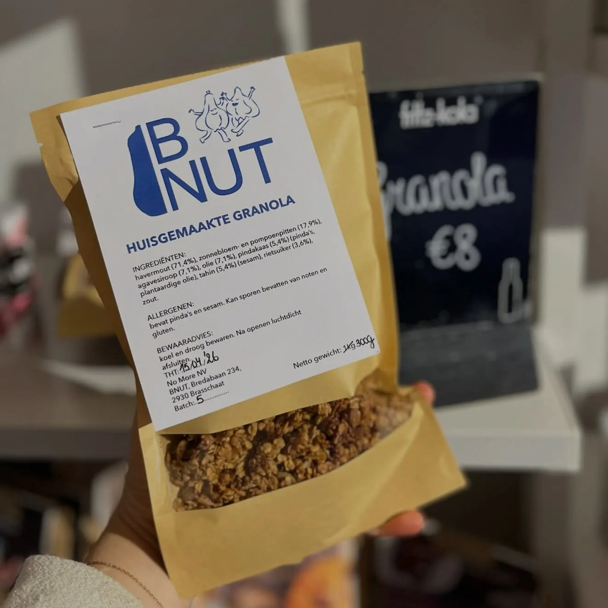
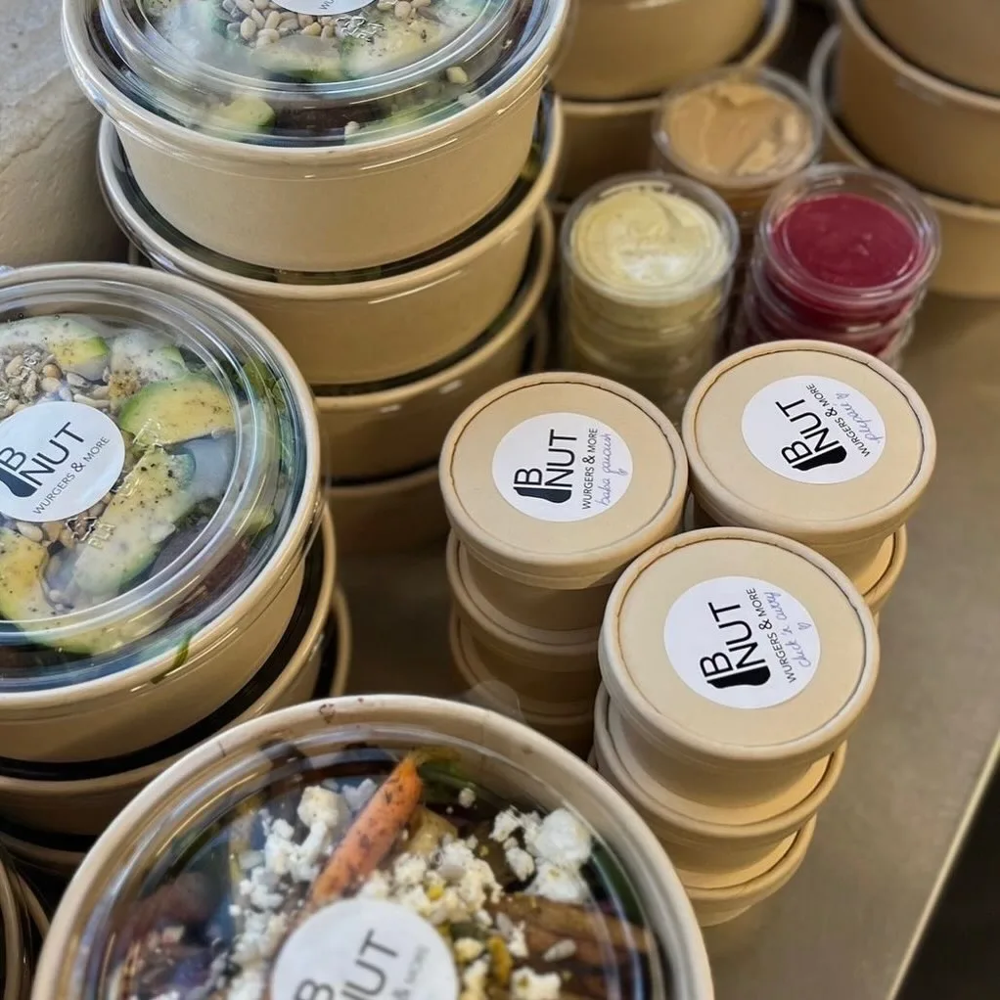
Hout aan de muur, papieren lampionnen aan het plafond en overal groen. Wie enkel iets komt drinken, is even welkom als wie blijft lunchen.
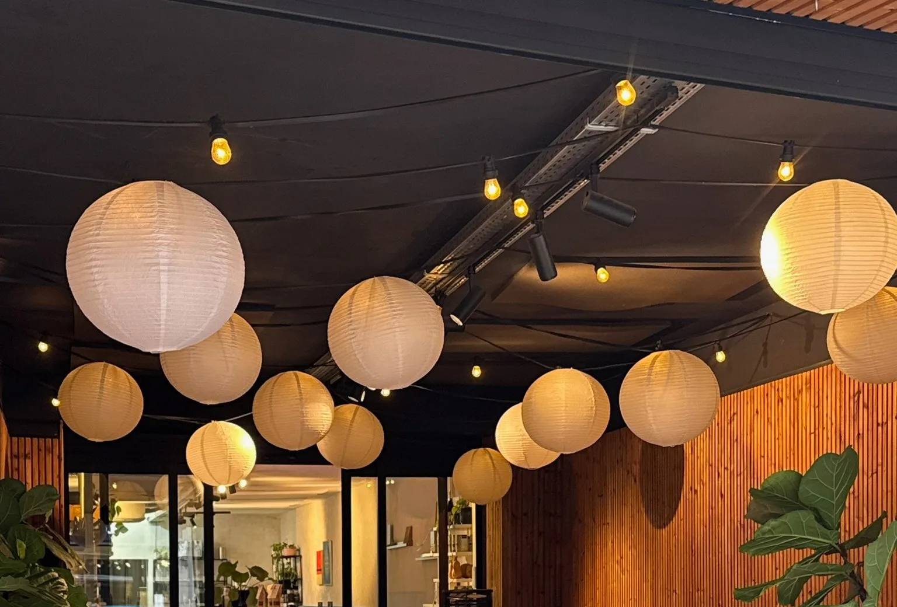
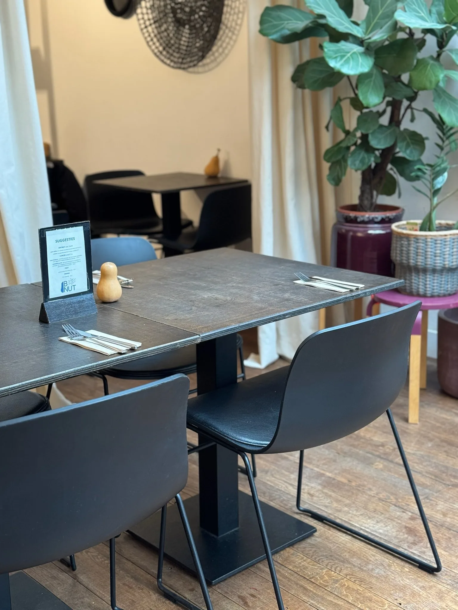
Ik zou zelf niet makkelijk voor vegi kiezen voor lunch maar Bnut raad ik echt altijd aan, ook aan prepare lovers zoals mezelf is hun vegi variant mega lekker! Keep up the good work.
We hebben gekozen voor een wurger. Zeer lekker en mooi gepresenteerd. Leuke plek voor een gezellige lunch maar ook om iets te drinken. De keuze aan zoete desserts is ook uitgebreid.
Heel lekker gegeten, verrassende gerechtjes. Heel lieve dames die hun hart en ziel hier in steken en dat proef je. Wij komen zeker terug!
Reserveren kan online. Kom je met een grotere groep of wil je iets laten klaarzetten, stuur dan gerust een berichtje.
Eat good,
feel better.
Ik maakte deze demo voor jullie om te tonen wat er kan. Na een kort gesprek maak ik er iets veel persoonlijkers van, helemaal naar jullie wens.
Vrijblijvend. Ik kom langs of we bellen.
Op maat, op jullie eigen domein.
Geen voorschot. Jullie betalen pas als alles klaar is.
Hosting, domeinnaam en kleine wijzigingen, zoals nieuwe openingsuren.
Omdat een voorbeeld meer zegt dan een mail. Zo zien jullie meteen wat er kan, en het kost jullie niets.
Nee. Het gesprek is vrijblijvend. Vinden jullie het niks, dan is het daarmee gedaan.
Na ons gesprek staat jullie site binnen 10 tot 14 dagen online.
Zeker. Jullie domeinnaam kan gewoon blijven, de nieuwe site komt in de plaats van de oude.
Nee, dat doe ik op basis van ons gesprek. Eigen foto's zijn mooi meegenomen, maar niet nodig om te starten.